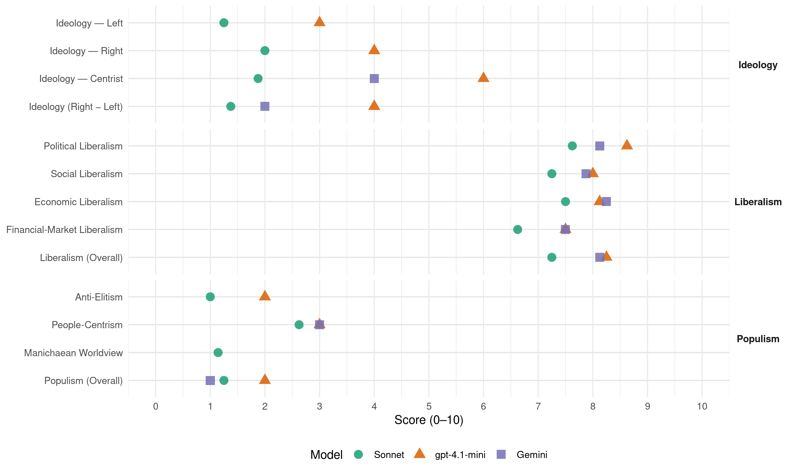

PP (Spain, 2004)
manifesto_id 33610_200403
Get full text: This site shows derived annotations and short verbatim quotes only. The full manifesto text is © Manifesto Project / WZB — obtain it via manifesto-project.wzb.eu using the manifesto_id above.
Headline scores
| Dimension | Sonnet | gpt-4.1-mini | Gemini |
|---|---|---|---|
| Populism (Overall) | 1.2 | 2.0 | 1.0 |
| Anti-Elitism | 1.0 | 2.0 | – |
| People-Centrism | 2.6 | 3.0 | 3.0 |
| Manichaean Worldview | 1.1 | – | – |
| Ideology (Right − Left) | 1.4 | 4.0 | 2.0 |
| Liberalism (Overall) | 7.2 | 8.2 | 8.1 |
| Political Liberalism | 7.6 | 8.6 | 8.1 |
| Social Liberalism | 7.2 | 8.0 | 7.9 |
| Economic Liberalism | 7.5 | 8.1 | 8.2 |
| Financial-Market Liberalism | 6.6 | 7.5 | 7.5 |
Evidence per dimension
Economic Liberalism
Gemini · score 9.0 · verified · chunk 1
“abierto y liberalizado mercados”
eje central de la política económica del Gobierno. Hemos abierto y liberalizado mercados que tradicionalmente estaban controlados por monopolistas
Gemini · score 8.0 · verified · chunk 2
“competencia y transparencia en los mercados”
PRECIOS ADECUADOS, ACOMPAÑADOS DE COMPETENCIA Y TRANSPARENCIA EN LOS MERCADOS ENERGÉTICOS. La normativa energética
Gemini · score 7.0 · verified · chunk 3
“flexibilizar el mercado del suelo”
Hemos REFORMADO LA LEY DEL SUELO, con el fin de flexibilizar el mercado del suelo, simplificar los trámites y la intervención administrativa
Gemini · score 9.0 · verified · chunk 4
“pilar básico del sistema de libre mercado”
defiende una mayor y mejor protección de los derechos de los consumidores como pilar básico del sistema de libre mercado que caracteriza a las sociedades
Gemini · score 9.0 · verified · chunk 5
“liberalización y la introducción de competencia”
mercados de telecomunicaciones eran monopolios. Hoy, la liberalización y la introducción de competencia ha beneficiado a toda la sociedad
Gemini · score 8.0 · verified · chunk 6
“libertad de mercado, extensión universal”
un sistema judicial independiente, una función pública capacitada y profesional, libertad de expresión, libertad de mercado, extensión universal de la educación y la sanidad
Gemini · score 8.0 · verified · chunk 7
“integración en el comercio internacional”
es vital impulsar su integración en el comercio internacional, esto es, que puedan
Gemini · score 8.0 · verified · chunk 8
“ACTIVIDAD ECONÓMICA Y EL TRÁFICO MERCANTIL”
como garante de la ACTIVIDAD ECONÓMICA Y EL TRÁFICO MERCANTIL.
gpt-4.1-mini · score 9.0 · verified · chunk 1
“Hemos abierto y liberalizado mercados que tradicionalmente estaban controlados por monopolistas públicos”
Hemos abierto y liberalizado mercados que tradicionalmente estaban controlados por monopolistas públicos, superando las exigencias comunitarias en la apertura de los mercados del gas, la electricidad o las telecomunicaciones.
gpt-4.1-mini · score 8.0 · verified · chunk 2
“REFORMAS ESTRUCTURALES QUE FAVOREZCAN LA COMPETENCIA”
— Continuaremos introduciendo REFORMAS ESTRUCTURALES QUE FAVOREZCAN LA COMPETENCIA en los mercados de productos y servicios, y en especial en los sectores estratégicos, dada su importancia en la estructura de costes de nuestras industrias.
gpt-4.1-mini · score 8.0 · verified · chunk 3
“flexibilizar el mercado del suelo, simplificar los trámites y la intervención administrativa”
Hemos reformado la ley del suelo, con el fin de flexibilizar el mercado del suelo, simplificar los trámites y la intervención administrativa, que reduce el porcentaje de cesión de suelo a los Ayuntamientos al 10% y acorta los plazos establecidos.
gpt-4.1-mini · score 8.0 · verified · chunk 4
“Creemos que unos mercados con alto nivel de COMPETENCIA, TRANSPARENCIA y SIN BARRERAS DE ENTRADA”
…PILAR BÁSICO DEL SISTEMA DE LIBRE MERCADO que caracteriza a las sociedades modernas y avanzadas. · Creemos que unos mercados con alto nivel de COMPETENCIA, TRANSPARENCIA y SIN BARRERAS DE ENTRADA son la principal garantía de defensa del consumidor. · La COOPERACIÓN ENTRE ADMINISTRACIONES, a través de los órganos de cooperación en el ámbito de consumo, como son la Conferencia Sectorial de Consumo y la Comisión de Cooperación de Consumo, y EL DIÁLOGO SOCIAL en materia de consumo son fundamentales para potenciar una protección al consumidor más eficaz, más transparente y más ágil.
gpt-4.1-mini · score 8.0 · verified · chunk 5
“liberalización y la introducción de competencia ha beneficiado a toda la sociedad española”
EN 1996, los principales mercados de telecomunicaciones eran monopolios. Hoy, la liberalización y la introducción de competencia ha beneficiado a toda la sociedad española.
gpt-4.1-mini · score 8.0 · verified · chunk 6
“la liberalización de los intercambios comerciales y se promueva el desarrollo de los países”
España trabajará, junto con sus socios europeos, para que en la ORGANIZACIÓN MUNDIAL DE COMERCIO se alcance un acuerdo para la conclusión satisfactoria de la AGENDA DE DOHA, de forma que se consiga la liberalización de los intercambios comerciales y se promueva el desarrollo de los países, integrándolos en el comercio mundial.
gpt-4.1-mini · score 8.0 · verified · chunk 7
“ELIMINADO EL IMPUESTO DE ACTIVIDADES ECONÓMICAS PARA MÁS DE 2 MILLONES DE AUTÓNOMOS”
· Hemos ELIMINADO EL IMPUESTO DE ACTIVIDADES ECONÓMICAS PARA MÁS DE 2 MILLONES DE AUTÓNOMOS, PYMES Y PROFESIONALES (92% de los actuales) y hemos modernizado la estructura impositiva local, dotando a la Haciendas Locales de recursos suficientes para prestar con calidad sus servicios, a través de mayor flexibilidad.
gpt-4.1-mini · score 8.0 · verified · chunk 8
“Justicia eficaz y especializada como garante de la ACTIVIDAD ECONÓMICA Y EL TRÁFICO MERCANTIL”
Creemos en un Justicia eficaz y especializada como garante de la ACTIVIDAD ECONÓMICA Y EL TRÁFICO MERCANTIL.
Sonnet · score 9.0 · verified · chunk 1
“ABIERTO Y LIBERALIZADO MERCADOS que tradicionalmente estaban controlados”
Hemos ABIERTO Y LIBERALIZADO MERCADOS que tradicionalmente estaban controlados por monopolistas públicos, SUPERANDO LAS EXIGENCIAS COMUNITARIAS
Sonnet · score 8.0 · verified · chunk 2
“REFORMAS ESTRUCTURALES QUE FAVOREZCAN LA COMPETENCIA”
Continuaremos introduciendo REFORMAS ESTRUCTURALES QUE FAVOREZCAN LA COMPETENCIA en los mercados de productos y servicios
Sonnet · score 6.0 · verified · chunk 3
“flexibilizar el mercado del suelo”
Hemos REFORMADO LA LEY DEL SUELO, con el fin de flexibilizar el mercado del suelo, simplificar los trámites
Sonnet · score 7.0 · verified · chunk 4
“mercados con alto nivel de COMPETENCIA”
Creemos que unos mercados con alto nivel de COMPETENCIA, TRANSPARENCIA y SIN BARRERAS DE ENTRADA son la principal garantía de defensa del consumidor
Sonnet · score 8.0 · verified · chunk 5
“LIBERALIZACIÓN y la introducción de competencia”
la LIBERALIZACIÓN y la introducción de competencia ha BENEFICIADO A TODA LA SOCIEDAD ESPAÑOLA. Los ciudadanos y las empresas disfrutan de menores precios de los servicios de telecomunicaciones
Sonnet · score 8.0 · verified · chunk 6
“liberalización e integración de los sectores económicos básicos”
la reducción de las ayudas públicas y la liberalización e integración de los sectores económicos básicos, conforme a los compromisos del Consejo Europeo de Barcelona
Sonnet · score 7.0 · verified · chunk 7
“libre circulación de bienes en todo el territorio”
ninguna autoridad adopte medidas que directa o indirectamente obstaculicen la libertad de circulación y establecimiento de las personas y la libre circulación de bienes en todo el territorio español.
Sonnet · score 7.0 · verified · chunk 8
“ECONOMÍA ESTABLE Y ABIERTA”
1. UNA ECONOMÍA ESTABLE Y ABIERTA; Mantendremos una ECONOMÍA ESTABLE, que procure bienestar y progreso para todos, que apoye a los emprendedores
Financial-Market Liberalism
Gemini · score 9.0 · verified · chunk 1
“transparencia en los mercados financieros”
un Gobierno ha impulsado la transparencia en los mercados financieros y la protección del inversor, con reformas como la Ley
Gemini · score 7.0 · verified · chunk 2
“mercado secundario de bolsa y fondos”
BIOTECNOLOGÍA Y NUEVOS MATERIALES, como la creación de un mercado secundario de bolsa y fondos mixtos de inversión en capital
Gemini · score 7.0 · verified · chunk 3
“subrogación de préstamos hipotecarios”
aranceles en las operaciones de novación y subrogación de préstamos hipotecarios. Estas medidas permiten cambios en las condiciones
Gemini · score 8.0 · verified · chunk 5
“instrumentos de capital riesgo para inversiones”
ligados a las garantías. — Desarrollaremos instrumentos de capital riesgo para inversiones en empresas de base tecnológica.
Gemini · score 7.0 · verified · chunk 6
“estabilidad financiera de los países”
Contribuir activamente con las iniciativas multilaterales dirigidas a la consecución de la estabilidad financiera de los países en desarrollo
Gemini · score 7.0 · verified · chunk 7
“bloquear transacciones o movimientos de capitales”
establecen las condiciones para bloquear transacciones o movimientos de capitales y para prohibir
gpt-4.1-mini · score 9.0 · verified · chunk 1
“Por primera vez en España, un Gobierno ha impulsado la transparencia en los mercados financieros y la protección del inversor”
Por primera vez en España, un Gobierno ha impulsado la transparencia en los mercados financieros y la protección del inversor, con reformas como el Código Olivencia, la Ley Financiera y la llamada Ley Aldama.
gpt-4.1-mini · score 7.0 · verified · chunk 2
“ESTABILIDAD CAMBIARIA que proporciona la pertenencia al área euro”
— Sin olvidar que uno de los principales logros del periodo ha sido la ESTABILIDAD CAMBIARIA que proporciona la pertenencia al área euro. Hemos sabido crear un ENTORNO DE ESTABILIDAD MACROECONÓMICA que ha permitido una reducción sin precedentes de los tipos de interés de más de 500 puntos básicos desde 1995.
gpt-4.1-mini · score 8.0 · verified · chunk 3
“Impulsaremos el desarrollo de un mercado de rentas vitalicias más ágil y flexible, en el que haya una mayor participación de las entidades financieras y aseguradoras”
Potenciaremos, en colaboración con las Comunidades Autónomas y los Ayuntamientos, la rehabilitación de edificios y viviendas, especialmente en centros históricos, concediendo ayudas a 200.000 viviendas en los próximos 4 años. Impulsaremos el desarrollo de un mercado de rentas vitalicias más ágil y flexible, en el que haya una mayor participación de las entidades financieras y aseguradoras.
gpt-4.1-mini · score 7.0 · verified · chunk 4
“Hemos promovido la ELABORACIÓN DE UN MARCO PARA LOS SERVICIOS DE TELECOMUNICACIONES”
…un claro ejemplo de esta política es la notificación en pantalla que aparece en los CAJEROS AUTOMÁTICOS, informando sus usuarios sobre las comisiones cobradas por su uso. · Hemos promovido la ELABORACIÓN DE UN MARCO PARA LOS SERVICIOS DE TELECOMUNICACIONES, que garantice los derechos de sus usuarios. Hemos reforzado la PROTECCIÓN DE LOS DERECHOS DE LOS USUARIOS de los servicios telefónicos de tarificación adicional, frente a posibles abusos.
gpt-4.1-mini · score 7.0 · verified · chunk 5
“Promoveremos mecanismos que faciliten la tarea de análisis de riesgos de las entidades financieras en relación a los proyectos de innovación”
— Desarrollaremos un marco financiero para la innovación. Para ello: § Promoveremos mecanismos que faciliten la tarea de análisis de riesgos de las entidades financieras en relación a los proyectos de innovación.
gpt-4.1-mini · score 7.0 · verified · chunk 8
“modernización y dotando de seguridad numerosas dependencias y renovando el parque automovilístico”
Hemos reforzado notablemente las INFRAESTRUCTURAS Y LOS MEDIOS DE LOS CUERPOS Y FUERZAS DE SEGURIDAD DEL ESTADO durante los últimos 8 años, modernizando y dotando de seguridad numerosas dependencias y renovando el parque automovilístico o de embarcaciones y los equipamientos de ambos Cuerpos.
Sonnet · score 8.0 · verified · chunk 1
“TRANSPARENCIA EN LOS MERCADOS FINANCIEROS Y LA PROTECCIÓN DEL INVERSOR”
un Gobierno ha impulsado la TRANSPARENCIA EN LOS MERCADOS FINANCIEROS Y LA PROTECCIÓN DEL INVERSOR, con reformas como el Código Olivencia, la Ley Financiera
Sonnet · score 7.0 · verified · chunk 2
“ESTABILIDAD CAMBIARIA que proporciona la pertenencia al área euro”
uno de los principales logros del periodo ha sido la ESTABILIDAD CAMBIARIA que proporciona la pertenencia al área euro.
Sonnet · score 6.0 · verified · chunk 3
“convenios ICO JOVEN para favorecer el acceso a microcréditos”
mediante convenios ICO JOVEN para favorecer el acceso a microcréditos
Sonnet · score 7.0 · verified · chunk 4
“comisiones cobradas por su uso”
notificación en pantalla que aparece en los CAJEROS AUTOMÁTICOS, informando sus usuarios sobre las comisiones cobradas por su uso
Sonnet · score 7.0 · verified · chunk 5
“MARCO FINANCIERO PARA LA INNOVACIÓN”
DESARROLLAREMOS UN MARCO FINANCIERO PARA LA INNOVACIÓN. Para ello: Promoveremos mecanismos que faciliten la tarea de ANÁLISIS DE RIESGOS DE LAS ENTIDADES FINANCIERAS en relación a los proyectos de innovación.
Sonnet · score 7.0 · verified · chunk 6
“ESTABILIDAD FINANCIERA de los países en desarrollo”
INICIATIVAS MULTILATERALES dirigidas a la consecución de la ESTABILIDAD FINANCIERA de los países en desarrollo, la ERRADICACIÓN DE LA POBREZA
Sonnet · score 4.0 · verified · chunk 7
“BLOQUEAR TRANSACCIONES O MOVIMIENTOS DE CAPITALES”
Otras leyes establecen las condiciones para BLOQUEAR TRANSACCIONES O MOVIMIENTOS DE CAPITALES y para PROHIBIR LA APERTURA DE CUENTAS.
Sonnet · score 7.0 · verified · chunk 8
“BLOQUEO de sus cuentas”
nueva legislación QUE PERMITE LA VIGILANCIA CONSTANTE Y REACCIÓN INMEDIATA, INCLUIDO EL BLOQUEO de sus cuentas [terrorist financing]
Political Liberalism
Gemini · score 8.0 · verified · chunk 1
“patriotismo constitucional y la estabilidad”
No propongo nada que no pueda cumplir. El patriotismo constitucional y la estabilidad en las instituciones fortalecen nuestra democracia.
Gemini · score 8.0 · verified · chunk 2
“lealtad constitucional e institucional”
mediante un PROCESO CONTINUADO DE DIÁLOGO CON LAS COMUNIDADES AUTÓNOMAS, basado en el principio de lealtad constitucional e institucional y aplicando técnicas de colaboración
Gemini · score 8.0 · verified · chunk 3
“asienta nuestra sociedad y nuestra democracia”
valores de tolerancia y convivencia pacífica sobre los que se asienta nuestra sociedad y nuestra democracia. · La violencia doméstica es una
Gemini · score 8.0 · verified · chunk 4
“nuestro marco constitucional y legal”
en las que se asienta nuestra sociedad, nuestro marco constitucional y legal, y el respeto a los derechos
Gemini · score 8.0 · verified · chunk 5
“garantizando el pluralismo informativo”
panorama audiovisual nacional, autonómico y local, garantizando el pluralismo informativo y la calidad en los contenidos.
Gemini · score 8.0 · verified · chunk 6
“libertad, la democracia, la seguridad”
participar activamente en él. · La libertad, la democracia, la seguridad y la defensa de los derechos humanos
Gemini · score 9.0 · verified · chunk 7
“fortalecía el sistema democrático”
se revitalizaba el Parlamento y se fortalecía el sistema democrático.
Gemini · score 8.0 · verified · chunk 8
“JUSTICIA INDEPENDIENTE, servida por JUECES”
comprometido con una JUSTICIA INDEPENDIENTE, servida por JUECES PROFESIONALES Y RESPONSABLES
gpt-4.1-mini · score 9.0 · verified · chunk 1
“El patriotismo constitucional y la estabilidad en las instituciones fortalecen nuestra democracia”
No propongo nada que no pueda cumplir. El patriotismo constitucional y la estabilidad en las instituciones fortalecen nuestra democracia. El respeto a las reglas de juego es clave para el bienestar y el progreso de España.
gpt-4.1-mini · score 8.0 · verified · chunk 2
“LEY DE MEDIACIÓN FAMILIAR como instrumento extrajudicial”
— Aprobaremos una LEY DE MEDIACIÓN FAMILIAR como instrumento extrajudicial de resolución de conflictos rápido, personalizado, confidencial y de menor coste, posibilitando la resolución amistosa del reparto de los bienes, derechos y obligaciones y el cuidado y necesidades de los hijos.
gpt-4.1-mini · score 9.0 · verified · chunk 3
“valores de tolerancia y convivencia pacífica sobre los que se asienta nuestra sociedad y nuestra democracia”
La violencia doméstica constituye un atentado a la vida, a la libertad, a la igualdad y a la integridad de la persona, que es absolutamente incompatible con los valores de tolerancia y convivencia pacífica sobre los que se asienta nuestra sociedad y nuestra democracia.
gpt-4.1-mini · score 8.0 · verified · chunk 4
“LA LIBERTAD DE ENSEÑANZA se fundamenta en el derecho que asiste a las familias”
…de la Constitución. Se basa en la conjugación armónica del derecho a la educación y la libertad de enseñanza, derechos que gozan de la máxima protección jurídica en nuestro sistema constitucional. · LA LIBERTAD DE ENSEÑANZA se fundamenta en el derecho que asiste a las familias a que sus hijos reciban el tipo de educación conforme a sus convicciones. Implica la libertad de elección de centro docente. Propugnamos una oferta educativa plural, a la que concurran los centros de titularidad pública y los promovidos por la iniciativa social, que han de tener garantizado su carácter propio. Para asegurar que, en las enseñanzas legalmente gratuitas, las familias puedan ejercer la libertad de elección de centro sin limitaciones de carácter socioeconómico, defendemos el sistema de conciertos, que tendrá que tener en cuenta la demanda de las familias.
gpt-4.1-mini · score 8.0 · verified · chunk 5
“LA EVALUACIÓN FAVORABLE será DETERMINANTE para avalar el acceso, como docentes e investigadores universitarios”
— Así mismo, LA EVALUACIÓN FAVORABLE será DETERMINANTE para avalar el acceso, como docentes e investigadores universitarios, de los doctores que reúnan los necesarios méritos académicos.
gpt-4.1-mini · score 9.0 · verified · chunk 6
“la libertad, la democracia, la seguridad y la defensa de los derechos humanos y del Estado de Derecho”
Los regímenes totalitarios y antidemocráticos son fuente continua de inseguridad e inestabilidad. La libertad, la democracia, la seguridad y la defensa de los derechos humanos y del Estado de Derecho son los fundamentos.
gpt-4.1-mini · score 9.0 · verified · chunk 7
“LA INMENSA MAYORÍA DE LOS ESPAÑOLES CONSIDERAN PROPIA LA CONSTITUCIÓN”
· LA INMENSA MAYORÍA DE LOS ESPAÑOLES CONSIDERAN PROPIA LA CONSTITUCIÓN, PORQUE SABEN QUE ES LA BASE DE NUESTRA DEMOCRACIA. La Constitución permite el normal ejercicio de los derechos y libertades, la tolerancia basada en el valor de la diversidad, la natural aceptación de Instituciones y reglas pactadas, la normal alternancia en el poder y la legitimación del poder por la voluntad popular, así como la eficacia de los mecanismos de protección contra sus posibles extralimitaciones y abusos.
gpt-4.1-mini · score 9.0 · verified · chunk 8
“JUSTICIA INDEPENDIENTE, servida por JUECES PROFESIONALES Y RESPONSABLES”
El Partido Popular está comprometido con una JUSTICIA INDEPENDIENTE, servida por JUECES PROFESIONALES Y RESPONSABLES, basada en la UNIDAD JURISDICCIONAL y la IGUALDAD de los españoles en la aplicación de la ley.
Sonnet · score 8.0 · verified · chunk 1
“FORTALECIMIENTO DE LA DEMOCRACIA”
35. FORTALECIMIENTO DE LA DEMOCRACIA — El patriotismo constitucional y la estabilidad en las instituciones fortalecen nuestra democracia.
Sonnet · score 7.0 · verified · chunk 2
“incompatible con los valores de tolerancia y convivencia pacífica sobre los que se asienta nuestra sociedad y nuestra democracia”
absolutamente incompatible con los valores de tolerancia y convivencia pacífica sobre los que se asienta nuestra sociedad y nuestra democracia.
Sonnet · score 7.0 · verified · chunk 3
“valores de tolerancia y convivencia pacífica”
incompatible con los valores de tolerancia y convivencia pacífica sobre los que se asienta nuestra sociedad y nuestra democracia
Sonnet · score 7.0 · verified · chunk 4
“VALORES CONSTITUCIONALES, CÍVICOS Y DEMOCRÁTICOS”
Promoveremos la formación en los VALORES CONSTITUCIONALES, CÍVICOS Y DEMOCRÁTICOS. — Fomentaremos los valores del RESPETO Y LA TOLERANCIA
Sonnet · score 7.0 · verified · chunk 5
“CONTROL PARLAMENTARIO de los objetivos”
El CONTROL PARLAMENTARIO de los objetivos y los resultados del sistema de ciencia-tecnología-empresa.
Sonnet · score 8.0 · verified · chunk 6
“la paz, la libertad, la democracia, los derechos humanos”
PROYECTO DE CONSTITUCIÓN EUROPEA sea una realidad lo antes posible… como garantía de la paz, la libertad, la democracia, los derechos humanos
Sonnet · score 9.0 · verified · chunk 7
“fortalecer la paz, la libertad, la democracia, los derechos humanos”
para fortalecer la paz, la libertad, la democracia, los derechos humanos, las libertades fundamentales, el Estado de Derecho
Sonnet · score 8.0 · verified · chunk 8
“JUSTICIA INDEPENDIENTE”
El Partido Popular está comprometido con una JUSTICIA INDEPENDIENTE, servida por JUECES PROFESIONALES Y RESPONSABLES, basada en la UNIDAD JURISDICCIONAL y la IGUALDAD
Liberalism (Overall)
Gemini · score 9.0 · verified · chunk 1
“abierto y liberalizado mercados”
eje central de la política económica del Gobierno. Hemos abierto y liberalizado mercados que tradicionalmente estaban controlados por monopolistas
Gemini · score 8.0 · verified · chunk 2
“competencia y transparencia en los mercados”
PRECIOS ADECUADOS, ACOMPAÑADOS DE COMPETENCIA Y TRANSPARENCIA EN LOS MERCADOS ENERGÉTICOS. La normativa energética
Gemini · score 8.0 · verified · chunk 3
“igualdad de oportunidades y no discriminación”
oficina permanente especializada para la promoción de la igualdad de oportunidades y no discriminación de las personas discapacitadas. — Regularemos
Gemini · score 8.0 · verified · chunk 4
“pilar básico del sistema de libre mercado”
defiende una mayor y mejor protección de los derechos de los consumidores como pilar básico del sistema de libre mercado que caracteriza a las sociedades
Gemini · score 8.0 · verified · chunk 5
“liberalización y la introducción de competencia”
mercados de telecomunicaciones eran monopolios. Hoy, la liberalización y la introducción de competencia ha beneficiado a toda la sociedad
Gemini · score 8.0 · verified · chunk 6
“libertad, la democracia, la seguridad”
participar activamente en él. · La libertad, la democracia, la seguridad y la defensa de los derechos humanos
Gemini · score 8.0 · verified · chunk 7
“fortalecía el sistema democrático”
se revitalizaba el Parlamento y se fortalecía el sistema democrático.
Gemini · score 8.0 · verified · chunk 8
“JUSTICIA INDEPENDIENTE, servida por JUECES”
comprometido con una JUSTICIA INDEPENDIENTE, servida por JUECES PROFESIONALES Y RESPONSABLES
gpt-4.1-mini · score 9.0 · verified · chunk 1
“Por primera vez en España, un Gobierno ha impulsado la transparencia en los mercados financieros y la protección del inversor”
Por primera vez en España, un Gobierno ha impulsado la transparencia en los mercados financieros y la protección del inversor, con reformas como el Código Olivencia, la Ley Financiera y la llamada Ley Aldama.
gpt-4.1-mini · score 8.0 · verified · chunk 2
“LEY DE CONCILIACIÓN DE LA VIDA FAMILIAR Y LABORAL”
— Hemos aprobado una LEY DE CONCILIACIÓN DE LA VIDA FAMILIAR Y LABORAL, que aumenta el período de DESCANSO POR MATERNIDAD A 16 SEMANAS, y establece por primera vez la posibilidad de que EL PADRE PUEDA DISFRUTAR DE HASTA 10 SEMANAS del período de descanso por maternidad, bien de forma simultánea o sucesiva.
gpt-4.1-mini · score 9.0 · verified · chunk 3
“valores de tolerancia y convivencia pacífica sobre los que se asienta nuestra sociedad y nuestra democracia”
La violencia doméstica constituye un atentado a la vida, a la libertad, a la igualdad y a la integridad de la persona, que es absolutamente incompatible con los valores de tolerancia y convivencia pacífica sobre los que se asienta nuestra sociedad y nuestra democracia.
gpt-4.1-mini · score 8.0 · verified · chunk 4
“Creemos que unos mercados con alto nivel de COMPETENCIA, TRANSPARENCIA y SIN BARRERAS DE ENTRADA”
…PILAR BÁSICO DEL SISTEMA DE LIBRE MERCADO que caracteriza a las sociedades modernas y avanzadas. · Creemos que unos mercados con alto nivel de COMPETENCIA, TRANSPARENCIA y SIN BARRERAS DE ENTRADA son la principal garantía de defensa del consumidor. · La COOPERACIÓN ENTRE ADMINISTRACIONES, a través de los órganos de cooperación en el ámbito de consumo, como son la Conferencia Sectorial de Consumo y la Comisión de Cooperación de Consumo, y EL DIÁLOGO SOCIAL en materia de consumo son fundamentales para potenciar una protección al consumidor más eficaz, más transparente y más ágil.
gpt-4.1-mini · score 8.0 · verified · chunk 5
“liberalización y la introducción de competencia ha beneficiado a toda la sociedad española”
EN 1996, los principales mercados de telecomunicaciones eran monopolios. Hoy, la liberalización y la introducción de competencia ha beneficiado a toda la sociedad española.
gpt-4.1-mini · score 8.0 · verified · chunk 6
“la libertad, la democracia, la seguridad y la defensa de los derechos humanos y del Estado de Derecho”
Los regímenes totalitarios y antidemocráticos son fuente continua de inseguridad e inestabilidad. La libertad, la democracia, la seguridad y la defensa de los derechos humanos y del Estado de Derecho son los fundamentos.
gpt-4.1-mini · score 8.0 · verified · chunk 7
“LA INMENSA MAYORÍA DE LOS ESPAÑOLES CONSIDERAN PROPIA LA CONSTITUCIÓN”
· LA INMENSA MAYORÍA DE LOS ESPAÑOLES CONSIDERAN PROPIA LA CONSTITUCIÓN, PORQUE SABEN QUE ES LA BASE DE NUESTRA DEMOCRACIA. La Constitución permite el normal ejercicio de los derechos y libertades, la tolerancia basada en el valor de la diversidad, la natural aceptación de Instituciones y reglas pactadas, la normal alternancia en el poder y la legitimación del poder por la voluntad popular, así como la eficacia de los mecanismos de protección contra sus posibles extralimitaciones y abusos.
gpt-4.1-mini · score 8.0 · verified · chunk 8
“JUSTICIA INDEPENDIENTE, servida por JUECES PROFESIONALES Y RESPONSABLES”
El Partido Popular está comprometido con una JUSTICIA INDEPENDIENTE, servida por JUECES PROFESIONALES Y RESPONSABLES, basada en la UNIDAD JURISDICCIONAL y la IGUALDAD de los españoles en la aplicación de la ley.
Sonnet · score 8.0 · verified · chunk 1
“MAYOR COMPETENCIA Y LA PROFUNDIZACIÓN EN LA LIBERALIZACIÓN”
Una MAYOR COMPETENCIA Y LA PROFUNDIZACIÓN EN LA LIBERALIZACIÓN DE LOS MERCADOS DE BIENES Y SERVICIOS es una prioridad del Partido Popular
Sonnet · score 7.0 · verified · chunk 2
“REFORMAS ESTRUCTURALES QUE FAVOREZCAN LA COMPETENCIA”
Continuaremos introduciendo REFORMAS ESTRUCTURALES QUE FAVOREZCAN LA COMPETENCIA en los mercados de productos y servicios
Sonnet · score 7.0 · verified · chunk 3
“LEY DE IGUALDAD DE OPORTUNIDADES, NO DISCRIMINACIÓN Y ACCESIBILIDAD UNIVERSAL”
Hemos aprobado la LEY DE IGUALDAD DE OPORTUNIDADES, NO DISCRIMINACIÓN Y ACCESIBILIDAD UNIVERSAL de las Personas con Discapacidad
Sonnet · score 7.0 · verified · chunk 4
“mercados con alto nivel de COMPETENCIA”
Creemos que unos mercados con alto nivel de COMPETENCIA, TRANSPARENCIA y SIN BARRERAS DE ENTRADA son la principal garantía de defensa del consumidor
Sonnet · score 7.0 · verified · chunk 5
“LIBERALIZACIÓN y la introducción de competencia”
la LIBERALIZACIÓN y la introducción de competencia ha BENEFICIADO A TODA LA SOCIEDAD ESPAÑOLA. Los ciudadanos y las empresas disfrutan de menores precios de los servicios de telecomunicaciones
Sonnet · score 8.0 · verified · chunk 6
“libertad de mercado, extensión universal de la educación”
NO HAY DESARROLLO SIN DEMOCRACIA Y NO HAY DEMOCRACIA SIN ESTADO DE DERECHO… libertad de mercado, extensión universal de la educación y la sanidad
Sonnet · score 7.0 · verified · chunk 7
“fortalecer la paz, la libertad, la democracia, los derechos humanos”
para fortalecer la paz, la libertad, la democracia, los derechos humanos, las libertades fundamentales, el Estado de Derecho
Sonnet · score 7.0 · verified · chunk 8
“JUSTICIA INDEPENDIENTE”
El Partido Popular está comprometido con una JUSTICIA INDEPENDIENTE, servida por JUECES PROFESIONALES Y RESPONSABLES, basada en la UNIDAD JURISDICCIONAL y la IGUALDAD
Anti-Elitism
gpt-4.1-mini · score 2.0 · verified · chunk 1
“El patriotismo constitucional y la estabilidad en las instituciones fortalecen nuestra democracia”
No propongo nada que no pueda cumplir. El patriotismo constitucional y la estabilidad en las instituciones fortalecen nuestra democracia. El respeto a las reglas de juego es clave para el bienestar y el progreso de España.
Sonnet · score 1.0 · verified · chunk 1
“personas preparadas y honradas, que tienen experiencia”
Me presento a las elecciones del 14 de marzo con un equipo de personas preparadas y honradas, que tienen experiencia de gobierno
Sonnet · score 1.0 · verified · chunk 2
“PRIORIDADES DE POLÍTICA ECONÓMICA DEL PARTIDO POPULAR”
Una de las PRIORIDADES DE POLÍTICA ECONÓMICA DEL PARTIDO POPULAR ha sido crear CONDICIONES FAVORABLES AL DESARROLLO INDUSTRIAL.
Sonnet · score 1.0 · verified · chunk 3
“POLÍTICA DE TOLERANCIA CERO”
Frente a ella, el Partido Popular mantiene una POLÍTICA DE TOLERANCIA CERO.
Sonnet · score 1.0 · verified · chunk 5
“MODERNIZACIÓN DE ESPAÑA”
Los Gobiernos del Partido Popular han apostado por la MODERNIZACIÓN DE ESPAÑA, impulsando nuestro sistema de ciencia-tecnología-empresa-sociedad.
Sonnet · score 1.0 · verified · chunk 6
“PARTIDO POPULAR HA REALIZADO EN APOYO DEL CRECIMIENTO”
Las políticas que el PARTIDO POPULAR HA REALIZADO EN APOYO DEL CRECIMIENTO Y DE LA ESTABILIDAD MACROECONÓMICA HAN MEJORADO LA COMPETITIVIDAD
Sonnet · score 1.0 · verified · chunk 7
“LUCHAREMOS CONTRA EL TRANSFUGUISMO”
Promoveremos un acuerdo para la REFORMA DE LA LEY DE FINANCIACIÓN DE PARTIDOS POLÍTICOS… LUCHAREMOS CONTRA EL TRANSFUGUISMO mediante las reformas legales pertinentes
Sonnet · score 1.0 · mixed · chunk 8
“proyecto político de centro reformista”
Un proyecto político de centro reformista que consolidará lo que entre todos hemos alcanzado
Ideology — Centrist
Gemini · score 4.0 · verified · chunk 1
“un programa ilusionante, de centro”
dar mayor calidad de vida a los españoles. Un programa ilusionante, de centro y reformista que, estoy convencido, representa la garantía
gpt-4.1-mini · score 6.0 · verified · chunk 1
“Un programa ilusionante, de centro y reformista que, estoy convencido, representa la garantía de un futuro mejor para todos”
Un programa ilusionante, de centro y reformista que, estoy convencido, representa la garantía de un futuro mejor para todos. Propongo metas ambiciosas y realizables.
Sonnet · score 3.0 · verified · chunk 1
“programa ilusionante, de centro y reformista”
Un programa ilusionante, de centro y reformista que, estoy convencido, representa la garantía de un futuro mejor para todos.
Sonnet · score 1.0 · verified · chunk 2
“MÁS OPORTUNIDADES PARA TODOS”
asegurar más bienestar, más crecimiento económico, mayor calidad en el empleo y MÁS OPORTUNIDADES PARA TODOS.
Sonnet · score 2.0 · verified · chunk 3
“DIÁLOGO POLÍTICO”
llevado a cabo el Partido Popular en base al DIÁLOGO POLÍTICO (Pacto de Toledo) y al DIÁLOGO SOCIAL
Sonnet · score 1.0 · verified · chunk 4
“COOPERACIÓN ENTRE ADMINISTRACIONES”
La COOPERACIÓN ENTRE ADMINISTRACIONES, a través de los órganos de cooperación en el ámbito de consumo
Sonnet · score 2.0 · verified · chunk 5
“garantizando la igualdad de oportunidades”
El Partido Popular tiene entre sus objetivos prioritarios que las NUEVAS TECNOLOGÍAS FORMEN PARTE DE LA VIDA COTIDIANA DE LOS CIUDADANOS y LAS EMPRESAS en todos los ámbitos, garantizando la igualdad de oportunidades.
Sonnet · score 2.0 · verified · chunk 6
“PILARES SOBRE LOS QUE SE HA DE BASAR EL CONSENSO”
pensamos que estos son los PILARES SOBRE LOS QUE SE HA DE BASAR EL CONSENSO que permita a España desplegar una política exterior
Sonnet · score 2.0 · verified · chunk 7
“VOLUNTAD DE DIÁLOGO CON TODAS LAS FUERZAS POLÍTICAS”
Manifestamos nuestra VOLUNTAD DE DIÁLOGO CON TODAS LAS FUERZAS POLÍTICAS PARA FORTALECER EL PACTO CONSTITUCIONAL
Sonnet · score 2.0 · verified · chunk 8
“proyecto político de centro reformista”
Un proyecto político de centro reformista que consolidará lo que entre todos hemos alcanzado
Ideology — Left
gpt-4.1-mini · score 3.0 · verified · chunk 1
“El empleo es siempre la mejor política social posible”
El empleo es siempre la mejor política social posible. Proporciona a los ciudadanos autonomía, oportunidades de mejora social y de autoestima personal.
Sonnet · score 1.0 · verified · chunk 1
“RECHAZAREMOS CUALQUIER TIPO DE DESIGUALDAD”
RECHAZAREMOS CUALQUIER TIPO DE DESIGUALDAD entre los ciudadanos a efectos de su protección social
Sonnet · score 2.0 · verified · chunk 2
“IGUALDAD REAL ENTRE MUJERES Y HOMBRES”
El programa del Partido Popular se centra en hacer efectiva la IGUALDAD REAL ENTRE MUJERES Y HOMBRES.
Sonnet · score 2.0 · verified · chunk 3
“IGUALDAD DE OPORTUNIDADES para las personas con discapacidad”
El Partido Popular quiere lograr una verdadera IGUALDAD DE OPORTUNIDADES para las personas con discapacidad
Sonnet · score 1.0 · verified · chunk 4
“igualdad de oportunidades en la educación”
EL SISTEMA DE BECAS Y AYUDAS AL ESTUDIO SE HA FORTALECIDO para hacer real el principio de igualdad de oportunidades en la educación
Sonnet · score 1.0 · verified · chunk 5
“cohesión social y asegurar la igualdad”
INVERTIR EN I+D+I ES GARANTÍA DE FUTURO y nos ayudará a alcanzar el objetivo del pleno empleo, incrementar los niveles de cohesión social y asegurar la igualdad de oportunidades.
Sonnet · score 1.0 · verified · chunk 6
“LUCHA CONTRA LA POBREZA”
La LUCHA CONTRA LA POBREZA, allí donde ésta se produzca, es un eje esencial de la política exterior de España.
Sonnet · score 1.0 · verified · chunk 7
“INCREMENTO DE NUESTRA AYUDA OFICIAL AL DESARROLLO”
Avanzaremos en el INCREMENTO DE NUESTRA AYUDA OFICIAL AL DESARROLLO HASTA ALCANZAR EN EL 2006 EL 0,33 DEL PIB
Sonnet · score 1.0 · verified · chunk 8
“BAJANDO LOS IMPUESTOS”
Seguiremos BAJANDO LOS IMPUESTOS. Somos el único partido que lo ha hecho y lo seguiremos haciendo
Ideology (Right − Left)
Gemini · score 2.0 · verified · chunk 1
“un programa ilusionante, de centro”
dar mayor calidad de vida a los españoles. Un programa ilusionante, de centro y reformista que, estoy convencido, representa la garantía
gpt-4.1-mini · score 4.0 · verified · chunk 1
“Un programa ilusionante, de centro y reformista que, estoy convencido, representa la garantía de un futuro mejor para todos”
Un programa ilusionante, de centro y reformista que, estoy convencido, representa la garantía de un futuro mejor para todos. Propongo metas ambiciosas y realizables.
Sonnet · score 2.0 · verified · chunk 1
“de centro y reformista”
Un programa ilusionante, de centro y reformista que, estoy convencido, representa la garantía de un futuro mejor para todos.
Sonnet · score 1.0 · verified · chunk 2
“PRIORIDADES DE POLÍTICA ECONÓMICA DEL PARTIDO POPULAR”
Una de las PRIORIDADES DE POLÍTICA ECONÓMICA DEL PARTIDO POPULAR ha sido crear CONDICIONES FAVORABLES AL DESARROLLO INDUSTRIAL.
Sonnet · score 1.0 · verified · chunk 3
“POLÍTICA DE TOLERANCIA CERO”
Frente a ella, el Partido Popular mantiene una POLÍTICA DE TOLERANCIA CERO.
Sonnet · score 1.0 · verified · chunk 4
“LUCHA CONTRA LA INMIGRACIÓN ILEGAL”
La LUCHA CONTRA LA INMIGRACIÓN ILEGAL, poniendo especial acento en la persecución del tráfico y explotación de seres humanos
Sonnet · score 1.0 · verified · chunk 5
“acceso de todos los ciudadanos”
LA DIFUSIÓN DEL CONOCIMIENTO A UN MENOR COSTE Y UN ACCESO DE TODOS LOS CIUDADANOS A LA INFORMACIÓN, A NUEVAS OPORTUNIDADES Y A UNA MAYOR CALIDAD DE VIDA.
Sonnet · score 2.0 · verified · chunk 6
“POLÍTICA COMÚN CONTRA LA INMIGRACIÓN ILEGAL”
Promoveremos una EFECTIVA Y PLENA POLÍTICA COMÚN CONTRA LA INMIGRACIÓN ILEGAL.
Sonnet · score 1.0 · verified · chunk 7
“REALIDAD INEQUÍVOCA DE LA NACIÓN ESPAÑOLA COMO SUJETO CONSTITUYENTE”
La Constitución se basa en la REALIDAD INEQUÍVOCA DE LA NACIÓN ESPAÑOLA COMO SUJETO CONSTITUYENTE Y EN LA IDENTIFICACIÓN DEL PUEBLO ESPAÑOL
Sonnet · score 2.0 · verified · chunk 8
“proyecto político de centro reformista”
Un proyecto político de centro reformista que consolidará lo que entre todos hemos alcanzado y que permitirá enfrentar con éxito los nuevos retos
Ideology — Right
gpt-4.1-mini · score 4.0 · verified · chunk 1
“El patriotismo constitucional y la estabilidad en las instituciones fortalecen nuestra democracia”
No propongo nada que no pueda cumplir. El patriotismo constitucional y la estabilidad en las instituciones fortalecen nuestra democracia. El respeto a las reglas de juego es clave para el bienestar y el progreso de España.
Sonnet · score 2.0 · verified · chunk 1
“INMIGRACIÓN ORDENADA EN UNA SOCIEDAD ABIERTA”
21. INMIGRACIÓN ORDENADA EN UNA SOCIEDAD ABIERTA
Sonnet · score 2.0 · verified · chunk 2
“la familia es la INSTITUCIÓN BÁSICA DE LA SOCIEDAD”
En el Partido Popular siempre hemos sabido que la familia es la INSTITUCIÓN BÁSICA DE LA SOCIEDAD.
Sonnet · score 1.0 · verified · chunk 3
“CULTURA DEL RECHAZO A LAS DROGAS”
Creemos que es esencial fomentar la CULTURA DEL RECHAZO A LAS DROGAS, especialmente entre niños y jóvenes
Sonnet · score 2.0 · verified · chunk 4
“LUCHA CONTRA LA INMIGRACIÓN ILEGAL”
La LUCHA CONTRA LA INMIGRACIÓN ILEGAL, poniendo especial acento en la persecución del tráfico y explotación de seres humanos
Sonnet · score 1.0 · verified · chunk 5
“DIMENSIÓN INTERNACIONAL DE NUESTRO SISTEMA”
debe impulsar la DIMENSIÓN INTERNACIONAL DE NUESTRO SISTEMA CIENTÍFICO Y TECNOLÓGICO para enmarcar de manera más integrada nuestras prioridades con las de nuestros socios europeos
Sonnet · score 3.0 · verified · chunk 6
“POLÍTICA COMÚN CONTRA LA INMIGRACIÓN ILEGAL”
Promoveremos una EFECTIVA Y PLENA POLÍTICA COMÚN CONTRA LA INMIGRACIÓN ILEGAL.
Sonnet · score 2.0 · verified · chunk 7
“REALIDAD INEQUÍVOCA DE LA NACIÓN ESPAÑOLA COMO SUJETO CONSTITUYENTE”
La Constitución se basa en la REALIDAD INEQUÍVOCA DE LA NACIÓN ESPAÑOLA COMO SUJETO CONSTITUYENTE Y EN LA IDENTIFICACIÓN DEL PUEBLO ESPAÑOL
Sonnet · score 3.0 · verified · chunk 8
“Combatiremos con mayor eficacia la inmigración ilegal”
Nuestra capacidad de acogida es limitada y debemos adecuar los flujos migratorios a esa realidad. Combatiremos con mayor eficacia la inmigración ilegal
Manichaean Worldview
Sonnet · score 1.0 · verified · chunk 1
“patriotismo constitucional y la estabilidad en las instituciones”
El patriotismo constitucional y la estabilidad en las instituciones fortalecen nuestra democracia.
Sonnet · score 1.0 · verified · chunk 2
“LACRA INACEPTABLE que nos incumbe a todos”
La violencia doméstica es una LACRA INACEPTABLE que nos incumbe a todos y exige una respuesta integral y coordinada
Sonnet · score 1.0 · verified · chunk 3
“LACRA INACEPTABLE que nos incumbe a todos”
La violencia doméstica es una LACRA INACEPTABLE que nos incumbe a todos y exige una respuesta integral
Sonnet · score 1.0 · verified · chunk 5
“GARANTIZAR LA PRESTACIÓN DE SERVICIOS PÚBLICOS”
GARANTIZAR LA PRESTACIÓN DE SERVICIOS PÚBLICOS DE TELEVISIÓN CON CONTENIDOS DE CALIDAD que servirán para reforzar la cohesión territorial.
Sonnet · score 1.0 · verified · chunk 6
“Los regímenes totalitarios y antidemocráticos son fuente”
Los regímenes totalitarios y antidemocráticos son fuente continua de inseguridad e inestabilidad.
Sonnet · score 1.0 · verified · chunk 7
“NUEVAS AMENAZAS TERRORISTAS son la principal amenaza”
Las NUEVAS AMENAZAS TERRORISTAS son la principal amenaza no sólo para la seguridad de los Estados occidentales
Sonnet · score 2.0 · verified · chunk 8
“LA LIBERTAD NO TIENE PRECIO”
LA LIBERTAD NO TIENE PRECIO, exige la aceptación incondicional de las reglas del juego democrático derivadas del marco constitucional
People-Centrism
Gemini · score 3.0 · verified · chunk 1
“las personas son protagonistas”
en el que todos caben y nadie queda al margen. Una sociedad abierta en la que las personas son protagonistas y tienen cada vez más oportunidades.
gpt-4.1-mini · score 3.0 · verified · chunk 1
“Queremos que sea compatible trabajar y poder disfrutar de la vida familiar”
Queremos que sea compatible trabajar y poder disfrutar de la vida familiar. Que sea más fácil el acceso a la vivienda para los jóvenes. Que las personas con discapacidad tengan nuevas oportunidades y mayor calidad de vida.
Sonnet · score 3.0 · verified · chunk 1
“Queremos obtener la confianza de los españoles”
Queremos obtener la confianza de los españoles para alcanzar mayores niveles de bienestar y prosperidad para todos.
Sonnet · score 2.0 · verified · chunk 2
“MÁS OPORTUNIDADES PARA TODOS”
asegurar más bienestar, más crecimiento económico, mayor calidad en el empleo y MÁS OPORTUNIDADES PARA TODOS.
Sonnet · score 3.0 · verified · chunk 3
“PROMOVER EL BIENESTAR SOCIAL Y LA CALIDAD DE VIDA”
nuestra ACCIÓN DECIDIDA PARA PROMOVER EL BIENESTAR SOCIAL Y LA CALIDAD DE VIDA DE LAS PERSONAS MAYORES
Sonnet · score 1.0 · verified · chunk 4
“nuestra sociedad aspira”
no se corresponden con el civismo y la calidad de vida a la que nuestra sociedad aspira. El Partido Popular considera necesario
Sonnet · score 2.0 · verified · chunk 5
“acceso de todos los ciudadanos”
LA DIFUSIÓN DEL CONOCIMIENTO A UN MENOR COSTE Y UN ACCESO DE TODOS LOS CIUDADANOS A LA INFORMACIÓN, A NUEVAS OPORTUNIDADES Y A UNA MAYOR CALIDAD DE VIDA.
Sonnet · score 3.0 · verified · chunk 6
“garantizar el bienestar y la calidad de vida de los ciudadanos”
UN MEDIO AMBIENTE SALUDABLE ES UN REQUISITO IMPRESCINDIBLE para mantener y garantizar el bienestar y la calidad de vida de los ciudadanos
Sonnet · score 3.0 · verified · chunk 7
“LA INMENSA MAYORÍA DE LOS ESPAÑOLES CONSIDERAN PROPIA LA CONSTITUCIÓN”
LA INMENSA MAYORÍA DE LOS ESPAÑOLES CONSIDERAN PROPIA LA CONSTITUCIÓN, PORQUE SABEN QUE ES LA BASE DE NUESTRA DEMOCRACIA.
Sonnet · score 4.0 · verified · chunk 8
“CERCANA AL CIUDADANO”
JUSTICIA MODERNA, ÁGIL, EFICAZ, DE MAYOR CALIDAD Y CERCANA AL CIUDADANO. Creemos en una Justicia que RESPONDA MEJOR A LAS NECESIDADES DE LA SOCIEDAD ACTUAL
Populism (Overall)
Gemini · score 1.0 · verified · chunk 1
“las personas son protagonistas”
en el que todos caben y nadie queda al margen. Una sociedad abierta en la que las personas son protagonistas y tienen cada vez más oportunidades.
gpt-4.1-mini · score 2.0 · verified · chunk 1
“El patriotismo constitucional y la estabilidad en las instituciones fortalecen nuestra democracia”
No propongo nada que no pueda cumplir. El patriotismo constitucional y la estabilidad en las instituciones fortalecen nuestra democracia. El respeto a las reglas de juego es clave para el bienestar y el progreso de España.
Sonnet · score 2.0 · verified · chunk 1
“Un programa ilusionante, de centro y reformista”
Un programa ilusionante, de centro y reformista que, estoy convencido, representa la garantía de un futuro mejor para todos.
Sonnet · score 1.0 · verified · chunk 2
“MÁS OPORTUNIDADES PARA TODOS”
asegurar más bienestar, más crecimiento económico, mayor calidad en el empleo y MÁS OPORTUNIDADES PARA TODOS.
Sonnet · score 1.0 · verified · chunk 3
“POLÍTICA DE TOLERANCIA CERO”
Frente a ella, el Partido Popular mantiene una POLÍTICA DE TOLERANCIA CERO.
Sonnet · score 1.0 · verified · chunk 4
“nuestra sociedad aspira”
no se corresponden con el civismo y la calidad de vida a la que nuestra sociedad aspira. El Partido Popular considera necesario
Sonnet · score 1.0 · verified · chunk 5
“acceso de todos los ciudadanos”
LA DIFUSIÓN DEL CONOCIMIENTO A UN MENOR COSTE Y UN ACCESO DE TODOS LOS CIUDADANOS A LA INFORMACIÓN, A NUEVAS OPORTUNIDADES Y A UNA MAYOR CALIDAD DE VIDA.
Sonnet · score 1.0 · verified · chunk 6
“garantizar el bienestar y la calidad de vida de los ciudadanos”
UN MEDIO AMBIENTE SALUDABLE ES UN REQUISITO IMPRESCINDIBLE para mantener y garantizar el bienestar y la calidad de vida de los ciudadanos
Sonnet · score 1.0 · verified · chunk 7
“LA INMENSA MAYORÍA DE LOS ESPAÑOLES CONSIDERAN PROPIA LA CONSTITUCIÓN”
LA INMENSA MAYORÍA DE LOS ESPAÑOLES CONSIDERAN PROPIA LA CONSTITUCIÓN, PORQUE SABEN QUE ES LA BASE DE NUESTRA DEMOCRACIA.
Sonnet · score 2.0 · verified · chunk 8
“CERCANA AL CIUDADANO”
JUSTICIA MODERNA, ÁGIL, EFICAZ, DE MAYOR CALIDAD Y CERCANA AL CIUDADANO. Creemos en una Justicia que RESPONDA MEJOR A LAS NECESIDADES DE LA SOCIEDAD ACTUAL
Social Liberalism